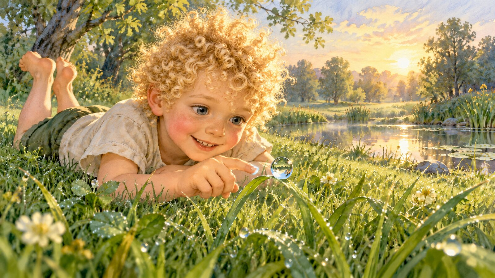

The Names of Light · Book one
Sydney and the Dance of Light and Water
A series of wonder, discovery and remembering, for children and the child within each of us.
Sydney was a boy who liked to look closely. While the grown-ups were still busy inside, he went out where the morning was newest and lay down on his belly in the wet grass. He held very still, and the world began to show him things. A single drop of dew trembled on the tip of a leaf, round and bright as a tiny moon. “Hello,” he whispered, and the drop seemed to answer, wobbling a little, as if it were smiling back. He leaned closer. Inside the drop was the whole morning: the sky, the morning sun and the tall green blades of grass. “How can something so small hold so much?” Sydney wondered. He held out a finger and touched the drop, and it slipped away, falling and disappearing into the ground. Sydney looked at his empty fingertip, then at the wide, wet morning around him. Sydney wished he could make himself small, small as the grass and the dew, small enough to live in their world. Down there, he would not have to be big. He could slip away from the big, grown-up world and stay.
From the opening of book one, a work in progress.